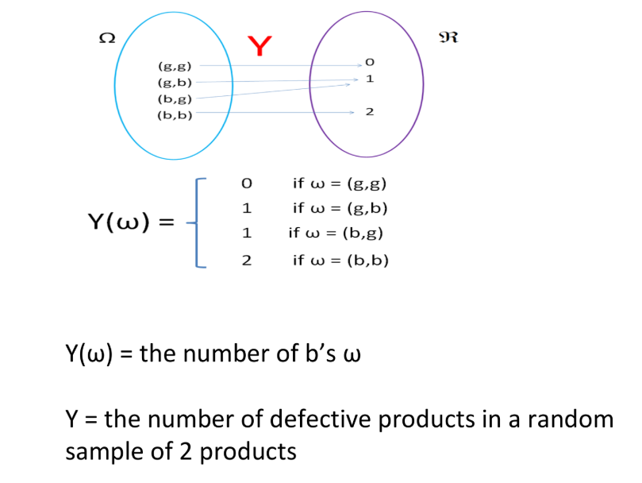
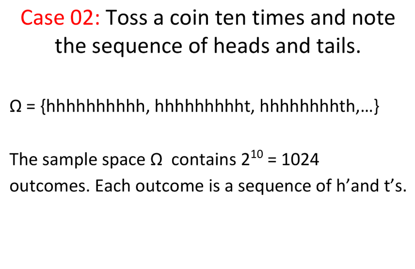
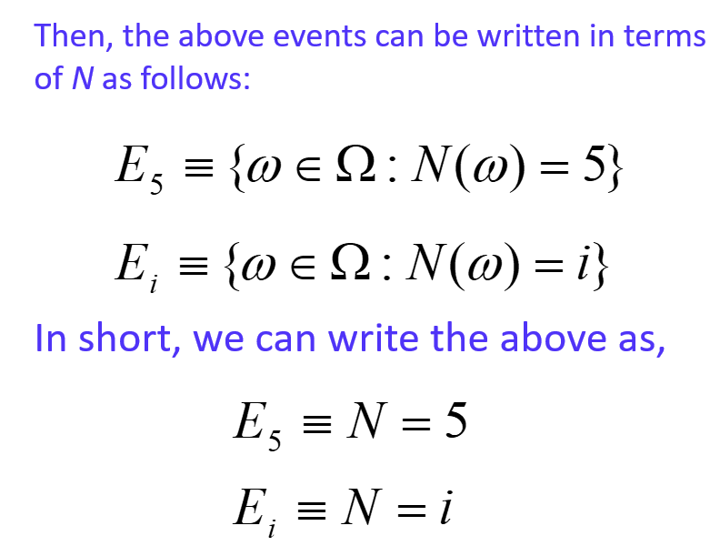

6 Probability and Distribution Theory
6.1 What is Probability?
Probability is a quantitative measure of uncertainty.
A number that conveys the strength of our belief in the occurrence of an uncertain event.
6.2 Terminology
- Experiment
Statisticians use the word experiment to describe any process that generates a set of data.
This involves observing or counting or measuring.
- Random Experiment
All possible outcomes can be specified in advance.
It can be repeated in an identical fashion.
The same outcome may not occur on various repetitions so that the actual outcome is not known in advance.
- Outcomes
The results one obtains from an experiment
- Sample space
The set of all possible outcomes of an experiment.
- Events
An event is a subset of the set of all possible results of some action or a process or a procedure.
Events are usually denoted by capital English letters A, B, C, D, E etc.
Events are of two types,
Simple event: An event containing only one outcome
Compound event: An event containing more than one outcome
- Random Variable
Let \Omega be a sample space. Let X be a function from \Omega to \mathbb{R} (i.e., X: \Omega \to \mathbb{R}). Then X is called a random variable.
Random variables are denoted by capital English letters.
Event 1

Event 2

Event 3



Event 4

6.3 Event Operations
Intersection
Union
Complement
6.4 Axioms of probability
Axiom 1: For any event A, P (A) ≥ 0
Axiom 2: P(\Omega) = 1
Axiom 3:
If A_1, A_2, \dots, A_k is a finite collection of mutually exclusive events, then P(A_1 \cup A_2 \cup \dots \cup A_k) = P(A_1) + P(A_2) + \dots + P(A_k) = \sum_{i=1}^{k} P(A_i).
If A_1, A_2, \dots is an infinite collection of mutually exclusive events, then P\Big(\bigcup_{i=1}^{\infty} A_i \Big) = \sum_{i=1}^{\infty} P(A_i).
Axioms 1 and 2 imply that for any event E, 0 \leq P(E) \leq 1.
The probability of an impossible event is 0.
The probability of an event that is certain to occur is 1.
6.5 Interpretation of probability
- Relative frequency interpretation.
The probability of an event E related to a random experiment can be interpreted as the ’approximate proportion of times that E occurs if we repeat the experiment very large number of times.
Example: A wildlife biologist could then say that the probability that a randomly selected turtle from this population has the disease is 0.05. This means, if we observe a very large population of sea turtles in a certain coastal region, the proportion of turtles carrying a particular shell disease might be approximately 5%.
- Subjective interpretation.
Example: A marine biologist feels that there is a 60% chance that a rescued dolphin will successfully reintegrate into the wild, based on her past experience with similar rescues and her knowledge of the dolphin’s behavior.
6.6 Methods for Determining Probability
Classical method
Relative frequency method
Subjective method
Using probability models
6.7 Classical Method
Probability is calculated based on the sample space.
No need to carry out any experiment. It is enough to know the sample space.
This approach can be used only if,
the sample space consists of finite number of outcomes.
all the outcomes are ‘equally likely’
Then, the probability of event E is given by,
P(E) = \frac{n(E)}{n(\Omega)}
6.8 Exercise
Q1: What is the probability of obtaining ‘Head’ in a single toss of an unbiased coin?
Q2: Two fair dice are tossed. Find the probability that sum of the dice equals seven.
Q3: A box contains 3 white balls and 2 black balls. Two balls are taken one after the other without replacement. Write down the sample space. Find the probability of getting one white ball and one black ball.
\Omega = \{(W,W), (W,B), (B,W), (B,B)\}
Are the outcomes of this sample space equally likely?
Can you write the sample space so that outcomes will be equally likely?
6.9 Relative frequency method (Empirical probability)
P(E) =\frac{\text{number of times E occurred}}{\text{number of times trial was repeated}} ## Exercise
Q1: A wildlife researcher observes 500 frogs in a wetland and records that 75 of them have a certain skin fungus.
Using the relative frequency approach, estimate the probability that a randomly selected frog from this wetland has the skin fungus.
Q2: During a bird migration study, a biologist counts 800 birds and finds that 160 of them are male sparrows.
Using the relative frequency approach, what is the probability that a randomly selected bird from this group is a male sparrow?
6.10 Subjective Method
Usually based on an educated guess or estimate, employing opinions and inexact information.
6.11 Conditional Probability
The conditional probability of an event A given that event B has occurred is denoted by P(A \mid B) and is defined as:
P(A \mid B) = \frac{P(A \cap B)}{P(B)}, \quad \text{for } P(B) > 0
6.12 Multiplication Rule
Rearranging the formula of conditional probability, we get the :
P(A \cap B) = P(A \mid B) \cdot P(B)
6.13 Extension for multiple events
For three events A, B, and C, the multiplication rule can be extended as:
P(A \cap B \cap C) = P(A) \cdot P(B \mid A) \cdot P(C \mid A \cap B)
6.14 Mutually Exclusive Events
Two or more events are mutually exclusive if they cannot occur at the same time.
P(A \cap B) = 0
Example (Zoology):
In a bird survey, observing a bird as either a sparrow or an eagle in a single sighting is mutually exclusive — the bird cannot be both at the same time.
6.15 Exhaustive Events
A set of events is exhaustive if at least one of them must occur, meaning they cover all possible outcomes.
P(A_1 \cup A_2 \cup \dots \cup A_n) = 1
Example (Zoology):
Observing a frog in a wetland, it must either be male or female. These categories are exhaustive because they cover all possible frogs.
6.16 Independent Events
Two events A and B are independent if the occurrence of one does not affect the probability of the other.
P(A \cap B) = P(A) \cdot P(B)
Example (Zoology):
The event that a sea turtle lays eggs today and the event that a crab crosses the beach are independent — one does not affect the other.
7 Combinations of Events: Mutual Exclusivity and Exhaustiveness
In-class
8 Rules of Probability
8.1 1. Complement Rule
The probability of the complement of an event A, denoted by A^c, is:
P(A^c) = 1 - P(A)
8.2 2. Addition Rule
- For any two events A and B:
P(A \cup B) = P(A) + P(B) - P(A \cap B)
- For mutually exclusive events A and B:
P(A \cup B) = P(A) + P(B)
8.3 3. Multiplication Rule
- Conditional probability:
P(A \mid B) = \frac{P(A \cap B)}{P(B)}, \quad P(B) > 0
- Multiplication rule:
P(A \cap B) = P(A \mid B) \cdot P(B)
- Extension to multiple events A_1, A_2, \dots, A_n:
P(A_1 \cap A_2 \cap \dots \cap A_n) = P(A_1) \cdot P(A_2 \mid A_1) \cdot \dots \cdot P(A_n \mid A_1 \cap \dots \cap A_{n-1})
8.4 4. Law of Total Probability
If \{B_1, B_2, \dots, B_n\} is a partition of the sample space \Omega, then for any event A:
P(A) = \sum_{i=1}^{n} P(A \mid B_i) \cdot P(B_i)
8.5 5. Bayes’ Theorem
For events A and B_i with P(B_i) > 0:
P(B_i \mid A) = \frac{P(A \mid B_i) \cdot P(B_i)}{\sum_{j=1}^{n} P(A \mid B_j) \cdot P(B_j)}
8.6 Exercise
Question 1
A wildlife researcher studies frogs in three ponds: Pond A, Pond B, and Pond C.
Pond A has 50 frogs, Pond B has 30 frogs, and Pond C has 20 frogs.
The probability that a frog in Pond A is infected with a skin fungus is 0.1, in Pond B is 0.2, and in Pond C is 0.3.
If a frog is randomly selected from all ponds, what is the probability that it is infected?
Suppose a randomly selected frog is found to be infected. What is the probability that it came from Pond B?
Question 2
A wildlife biologist tests a population of 1000 bats for a viral infection using a diagnostic test.
200 bats are actually infected.
The test correctly identifies 180 of the infected bats as positive.
Among the 800 uninfected bats, the test correctly identifies 720 as negative.
Tasks:
Calculate the sensitivity of the test.
Calculate the specificity of the test.